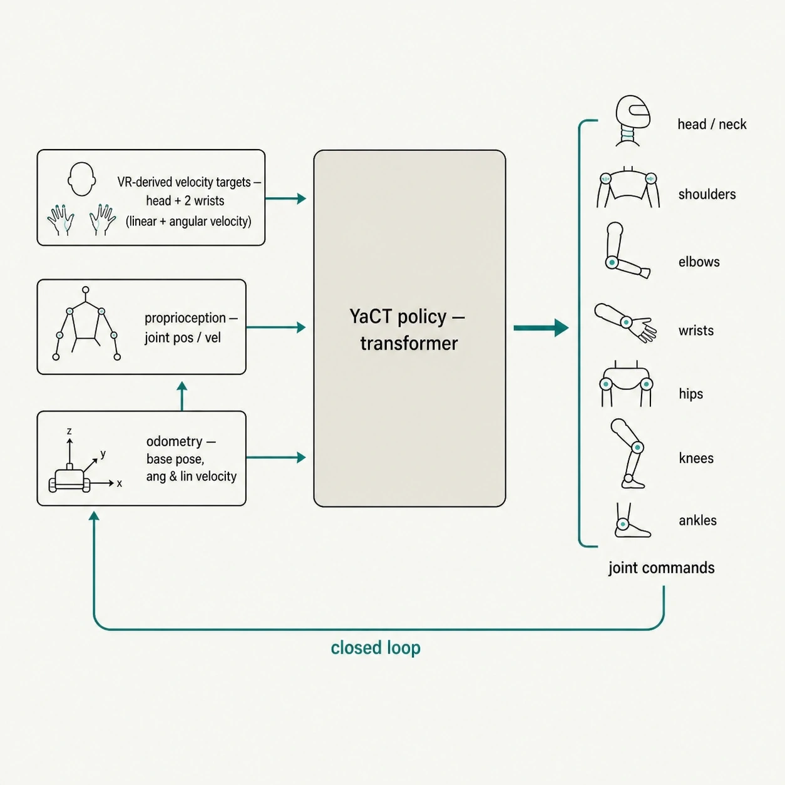
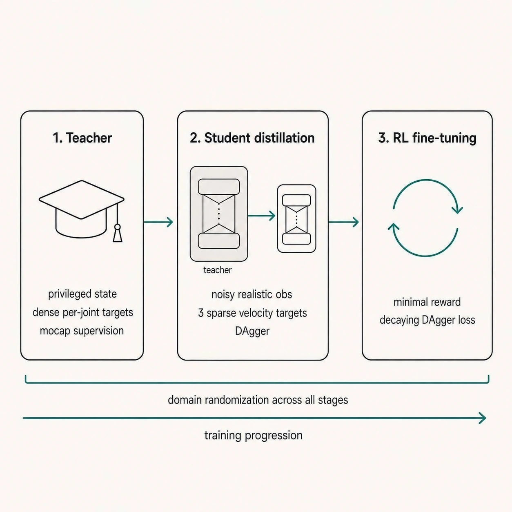
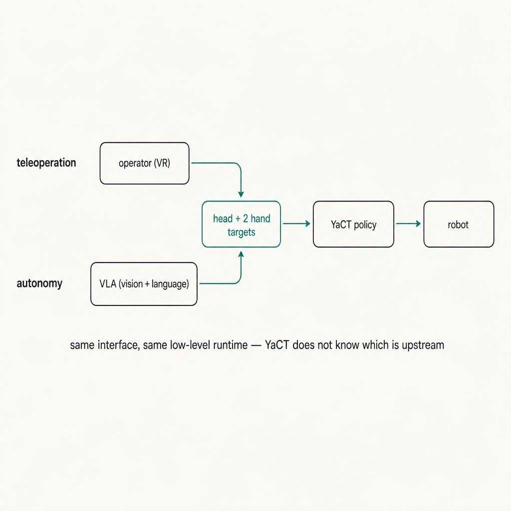
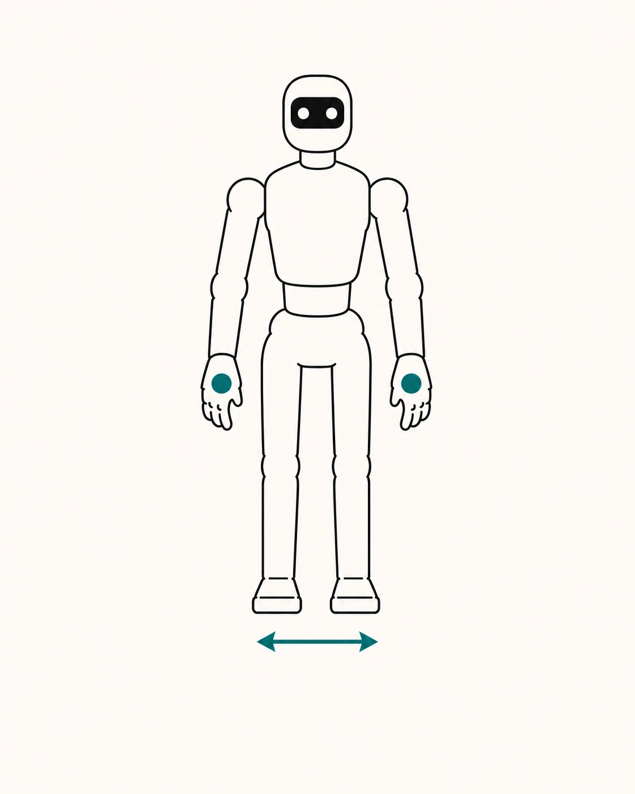
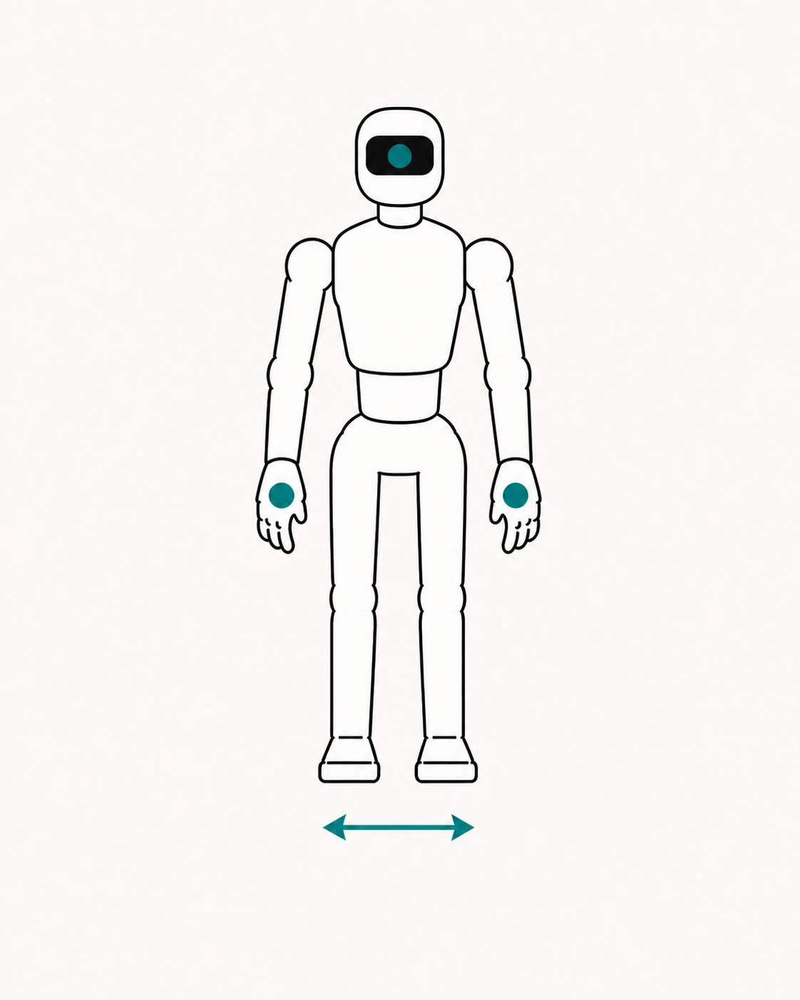
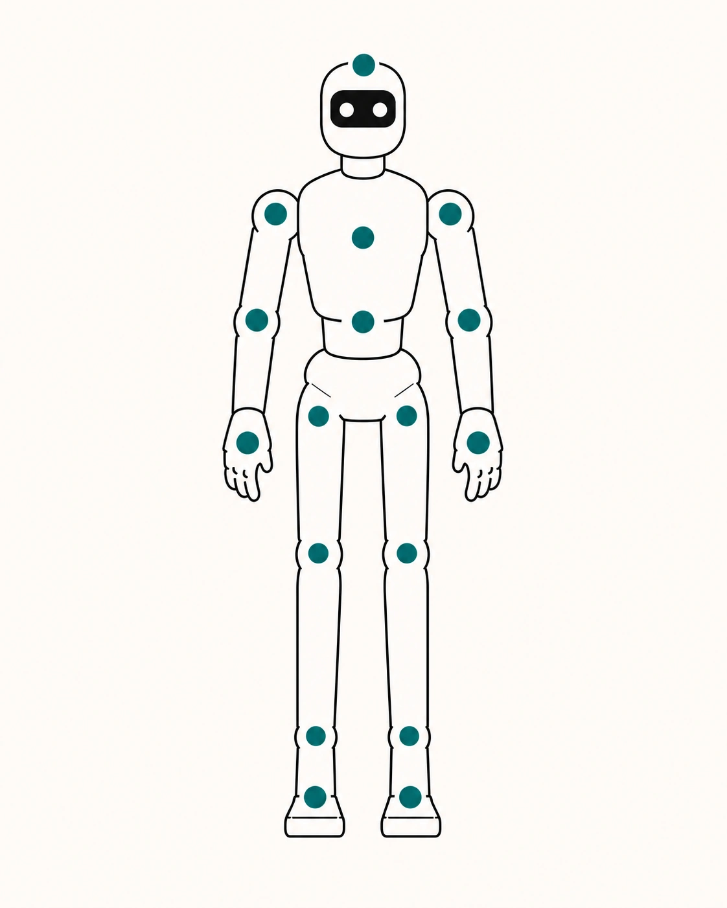
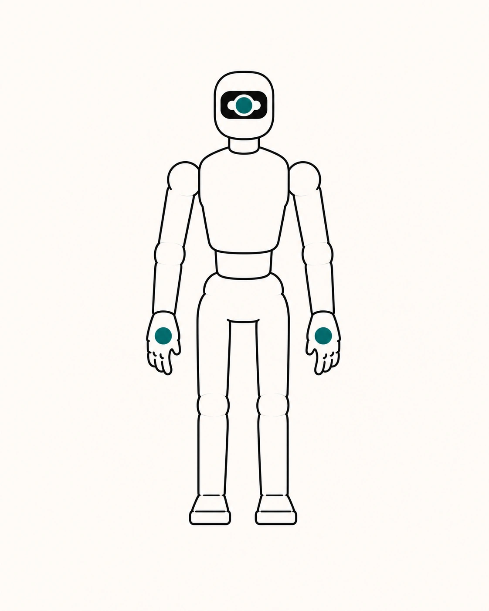

Abstract
Whole-body humanoid teleoperation must cover a wide range of tasks — from locomotion and crouching to precise manipulation and forceful interaction — without burdening a human operator or an autonomous policy with complex low-level commands. Meeting both goals is difficult: compact interfaces can sacrifice precise, stable control, while hierarchical systems can preserve a compact command interface but add a planning stage whose latency and computational cost depend on the implementation. We present YaCT (Yet Another Closed-loop Teleoperation), a single policy that covers a broad task range while controlling the full humanoid from linear and angular velocity targets for the head and two wrists. YaCT observes how the robot actually moves in the world and uses this feedback to correct positioning errors and adapt its whole-body response when the environment resists. To obtain natural yet robust behavior, we first learn a broad motion prior from human motion data, transfer it to a deployable policy under realistic observations, and then refine it using reinforcement learning for accurate and smooth task execution. Hardware demonstrations show one policy performing locomotion, low-height manipulation, precise positioning, and loaded-object pulling. Its compact interface can be driven by an operator wearing a VR headset or by a vision–language–action policy.
The problem
The challenge is not any individual behavior, but satisfying four control requirements at the same time:
- A convenient, minimal interface. A standard VR headset and two controllers track the poses of the head and wrists, from which the interface derives three Cartesian velocity targets. Additional trackers or command modalities can make teleoperation harder to set up and use, and can complicate integration with an autonomous upper-level policy.
- Coordinated whole-body control. Sparse task-space targets must be translated into joint-level motion across the legs, torso, and arms while the controller continuously maintains balance; this coordination should not be delegated to the operator.
- Forceful interaction under resistance. When a load resists, the robot may not move as far as the operator commands. A useful controller must turn the continuing command into a stronger whole-body pulling response while maintaining balance, rather than simply replaying the requested motion.
- Precision. Two different kinds matter. The first is end-effector precision while the base remains stationary — enough, for example, to align a hand with a small button. The second is precise incremental base positioning: if the operator commands the base three centimeters forward, it should travel three centimeters and then stop. This requires the controller to maintain an internal estimate of the remaining world-frame displacement and correct it to zero.
These requirements motivate a policy that maps a compact task-space command to stable whole-body control while observing the robot's displacement in the world.
YaCT on hardware
YaCT addresses these requirements with a single end-to-end policy that turns head and wrist velocity targets into coordinated full-body motion. The upper level specifies how the head and wrists should move; YaCT controls every joint, coordinates locomotion, and maintains balance.
In the clip below, one policy walks the robot forward, lowers the body, and picks up an object. The sequence requires coordinated motion of the legs, torso, and arms while the same policy maintains balance.
How YaCT works
At a high level, YaCT is a single end-to-end transformer that maps
(head + wrist velocity targets + robot proprioception + odometry) → joint commands
for all actuated joints at 50 Hz.

The operator-facing interface is deliberately minimal: a standard VR setup provides head and wrist poses, from which the interface computes linear and angular velocities. Only these head and wrist velocities are passed to the low-level YaCT policy; the VR poses themselves are not. Internally, YaCT integrates the commanded velocities and combines them with odometry to maintain an estimate of the remaining world-frame displacement. This internal signal closes the feedback loop but is not part of the external operator interface. The policy infers the motion of the feet, hips, and spine while maintaining balance. An autonomous upper-level policy can produce the same velocity commands, as discussed in From teleop to autonomy. Throughout this article, we use hand targets as a more intuitive name for the two technical wrist targets.
The policy is trained in three stages.

Stage 1 — Teacher (mocap-supervised, privileged state)
The teacher is trained in an idealized simulator with privileged state — full joint targets, body-part positions, no observation noise, no occlusions, and the sampled domain-randomization state that defines the current simulated dynamics. Supervision from human motion-capture data provides human-like whole-body motion, while dense rewards are used to stabilize training.
Two design choices are particularly important here. First, the teacher trains under the same domain randomization the student will later face — mass, friction, damping, motor characteristics, external perturbations, and so on. Second, the corresponding randomization parameters are part of the teacher's observation. The teacher therefore does not have to learn one action that works for an average environment: it can adapt its action to the particular dynamics sampled for the current episode. During DAgger, this provides dynamics-conditioned action labels at the states visited by the student. The student never receives the randomization state directly; it has to infer its effects from realistic observations and history. Shared randomization and privileged conditioning provide stable supervision across the randomized dynamics encountered during student training. The teacher is never deployed on the real robot; it serves as a robust source of supervision for the student.
Stage 2 — Student (DAgger-distilled, sparse 3-target input)
The student is the deployable policy used on the real robot. It sees only realistic inputs: a long history of noisy proprioception, base state from odometry, and linear and angular velocity targets for the head and two wrists. No privileged information. No future look-ahead. No dense per-joint targets and no task-space targets for body parts beyond the head and wrists.
That sparsity is a deliberate design decision and a central interface choice in YaCT. It has three consequences:
- Convenient teleoperation. The operator only needs a standard VR setup — headset + two controllers — with no full-body mocap suit, ankle IMUs, additional buttons, or foot pedals.
- A stable abstraction boundary. The upper level, whether a person or a VLA, produces the same Cartesian targets while YaCT remains the unchanged low-level runtime.
- Room for new locomotion behaviors. Keeping leg motion internal allows new locomotion behaviors to be investigated by expanding training coverage without necessarily changing the interface.
We distill the teacher into the student with DAgger [5]: the student acts, the teacher provides an action label at the states visited by the student, and we train on those labels. This mitigates the distribution shift of naive behavior cloning. Throughout training — teacher, distillation, and RL fine-tune — we also apply a lightweight trajectory-difficulty curriculum, upsampling the harder motions relative to their frequency in the raw motion corpus.
Why teacher–student alone is not enough
At the end of Stage 2, the student is optimized to match teacher actions on the visited state distribution. This imitation objective does not directly minimize task-space tracking error, so matching the teacher and satisfying the operator's command can diverge under contacts and out-of-distribution inputs. Two failure modes appear immediately on the real robot:
- Weak out-of-distribution behavior. States outside the distillation distribution — a novel contact, a different friction coefficient, or an unusual sequence of operator targets — can lead to jittery or inaccurate actions.
- No direct target-tracking objective. Matching teacher actions and minimizing command-tracking error are correlated but not identical, especially under contact and near the edge of the training distribution.
We therefore add a third stage: RL fine-tuning of the student with the operator's targets as the reward signal.
Stage 3 — RL fine-tuning
We continue training the student with Proximal Policy Optimization (PPO) [6], rewarding:
- Tracking — the robot's head and wrist motion should follow the commanded target trajectories,
- Smoothness — action rate and jerk are penalized so we don't trade smooth motion for a marginal tracking gain.
The reward is deliberately minimal. No hand-crafted gait rewards, no per-joint shaping — just "follow the target, stay smooth". Everything else is inherited from the distilled prior.
To stabilize fine-tuning, we retain a decaying DAgger loss on top of the RL objective:
Early in fine-tuning, DAgger dominates and keeps the policy near the well-behaved region learned during distillation. As λ(t) decays, RL places increasing weight on direct target satisfaction while reducing degradation of the learned motion prior.
The full sim-to-real result depends on several cumulative engineering improvements on top of this recipe:
- Sim-to-real reduction: we emulate inference latency inside the simulator and randomize joint dynamics (friction, damping, delays), so the policy is trained on variations representative of deployment conditions.
- Synthetic coverage of underrepresented motions: our motion-capture data contains limited examples of motions such as sideways walking, so we generate these trajectories automatically with a simple locomotion policy. For a subset of trajectories, we also randomize arm positions to broaden upper-body coverage.
- Training scale and optimization: more careful PPO base parameters, a better mix of distillation and PPO, longer training, and scaling up to 8 GPUs.
What mattered in training
In our training runs, performance was sensitive to several dimensions of scale and optimization:
- Data volume. More trajectories expose the policy to a larger set of motion transitions.
- Data diversity. Hand poses, side-stepping, squats, and contact configurations need to be represented in the training distribution; states outside that distribution remain less reliable.
- Model capacity. Insufficient model capacity saturates as the motion distribution becomes more diverse.
- Temporal architecture. Given the same observation history, the Transformer consistently outperformed the MLP baseline in our training runs, suggesting that the more flexible temporal model better fits the diverse motion distribution.
- Optimization schedule. Warmup, learning-rate decay, and the balance between DAgger and RL affected final performance.
Capabilities
The clips below are all the same YaCT policy — no per-task tuning, no switching between controllers.
Whole-body coordination. Picking an object up from the floor is not an arm-only motion: the robot has to lower its body, bend and reach, keep its balance through contact, secure the object, and stand back up. YaCT coordinates the full sequence with the same policy used for every other capability below.
Reaching precisely. Sparse targets do not mean coarse control — the operator can align the end-effectors at fine scale when the task calls for it.
Dynamics. The policy handles the perturbations shown below without falling over. We attribute part of this robustness to the RL fine-tune.
Latency. A frame-by-frame comparison of the recorded operator and robot motion in Video 5 gives an approximately 100 ms end-to-end latency estimate for this hardware configuration.
From teleop to autonomy
YaCT's compact task-space interface can serve both as a data-collection boundary for autonomous policies and as their low-level runtime. The pipeline is straightforward:
- Use YaCT to collect teleoperated demonstrations (observations + derived head and wrist velocity commands over time).
- Train a VLA (vision-language-action) policy to output velocity commands for only three task-space points: the head and two wrists.
- Connect that VLA to YaCT at inference time. The same low-level whole-body controller is reused unchanged.
The key point is that steps 1–3 share the same interface. Nothing in the low-level stack changes when the operator is replaced by a VLA; the YaCT policy is agnostic to the source of the targets.

In the rollout below, a VLA drives YaCT without teleoperation.
Comparison with prior whole-body controllers
The comparison below separates two questions: what each controller consumes, and what the resulting system can do. It combines capabilities reported in the cited papers with qualitative observations from our deployments; it is not a controlled cross-platform benchmark.
Interface and capability overview
In the configurations evaluated here, none of the baseline families combines all four properties from the problem statement:
- Pure IK / heuristic controllers — represented here by Open-TeleVision-style XR teleoperation [2] — provide direct arm control with a compact interface, but do not coordinate the lower body or close the loop with world-frame displacement.
- AMO-family [3] receives head and hand poses together with a separate base-velocity command. Its optimization-based upper policy computes torso orientation and base-height commands internally for the lower-body policy. This supports squatting and bending, but does not provide precise closed-loop base positioning under sustained contact.
- SONIC version 1.1 [4] provides learned whole-body tracking and broad motion coverage. Its low-level tracker consumes a dense whole-body reference and can be paired with a separate kinematic planner that converts higher-level commands into such a reference. In the configuration evaluated here, the remaining world-frame displacement is not returned to the planner.
- CLONE [1] introduced the sparse three-target interface and closed-loop world-frame correction that inspired YaCT. The official-repository deployment shown below retains limitations in locomotion consistency, movement latency, and steadiness for our target scenarios.
(a) XR / IK

(b) AMO-like

(c) SONIC v1.1 tracker

(d) CLONE / YaCT
shared interface
| Requirement | XR teleop | AMO-like | SONIC v1.1 | CLONE | YaCT |
|---|---|---|---|---|---|
| Controller-facing input | hands + base velocity | head + hands + base velocity | dense body reference | head + two wrists | head + two wrist velocities |
| Arm control | Demonstrated | Demonstrated | Demonstrated | Demonstrated | Demonstrated |
| Locomotion | Demonstrated | Demonstrated | Demonstrated | Inconsistent | Demonstrated |
| Deep squat | Not demonstrated | Demonstrated | Demonstrated | Demonstrated | Demonstrated |
| Bend | Not demonstrated | Demonstrated | Demonstrated | Demonstrated | Demonstrated |
| World-frame correction | Unavailable | Unavailable | Absent in evaluated stack | Available | Available |
| Fine incremental base positioning | Not demonstrated | Not demonstrated | Not demonstrated | Latency-limited | Demonstrated |
| Sustained pull under load | Not demonstrated | Not demonstrated | Not demonstrated | Difficult | Demonstrated |
| Steadiness | Limited | Limited | Demonstrated | Blocker | Demonstrated in shown scenarios |
| Action latency | 1/3Low | 1/3Low | 2/3Medium (combined stack) | 2/3Overall medium Arms: low Movement: high | 1/3Low |
| Compact upper-level modality | Convenient | Extra modalities | Via separate planner | Convenient | Convenient |
Table 1 — Controller capability comparison.The table combines paper-reported capabilities with qualitative observations from our deployments; it is not a controlled cross-platform benchmark.Demonstrated / favorableLimited / mixedNot demonstrated / blockerFor action latency, 1/3 is low, 2/3 medium, and 3/3 high; lower is better.
The distinguishing point is not any single capability in isolation, but that YaCT satisfies these requirements simultaneously under one policy, without an additional planner or a larger operator interface.
From CLONE to YaCT
The sparse interface and world-frame closed loop both originate in CLONE [1]. YaCT retains those ideas while changing four parts of the recipe: a Transformer backbone replaces the MLP + mixture-of-experts architecture; the motion corpus is expanded with additional motion-capture data and custom synthetic trajectories; domain randomization is broadened and tuned to the deployment distribution; and an RL fine-tuning stage follows teacher–student distillation.
A CLONE deployment from the official repository is shown in Video 7. In this deployment, arm response is fast and heavy pulling is possible, but locomotion is inconsistent, movement response has high latency, and steadiness remains a practical limitation. These observations motivated the architecture and training changes above.
Comparison with SONIC v1.1 in our experimental stack
This section refers specifically to SONIC version 1.1 [4] and the official checkpoints used in our deployment. SONIC is a strong whole-body motion tracker. Our experimental system contains two separable components with different requirements: a 180M planner maps compact intent to a dense full-body reference, while a low-level SONIC tracker — an 11M encoder and 38M decoder, 49M parameters in total — maps that reference to robot motion. Either component can be used independently; the complete planner-plus-tracker stack evaluated here contains 229M parameters. YaCT instead maps three global velocity targets directly to joint commands with a single 9M Transformer and returns the robot's internally maintained world-frame displacement to that same policy. The observations below apply to this version 1.1 configuration rather than to every possible SONIC deployment.
SONIC v1.1 stack
180M + 49MThe planner and tracker can operate separately. In our combined stack, world-frame error is not returned to the planner.
YaCT
9MSingle-stage policy with world-frame feedback inside the loop.
Three pairs of clips illustrate practical differences in response latency, global positioning, and sustained pulling under resistance.
Latency: frame-by-frame comparison of Videos 8 and 9 gives an estimate of approximately 400–500 ms for our SONIC v1.1 stack and approximately 100 ms for YaCT. These values are video-derived estimates rather than instrumented latency measurements.
Global movement accuracy: an open-loop tracker can reproduce a plausible motion without reaching the intended position in the world. YaCT instead integrates the incoming velocity commands and combines them with odometry to maintain the remaining world-frame displacement internally, continuing until that error is corrected. These clips illustrate the difference between open-loop motion reproduction and closed-loop correction; they are not a matched quantitative trial.
Sustained pulling under resistance: when the wrist velocity command persists while the load resists and measured motion remains small, YaCT's internal world-frame displacement grows. The policy uses this internal signal to produce a stronger pulling response while coordinating balance as the robot begins to move.
Limitations & next steps
- Residual instability. The policy remains vulnerable to some out-of-distribution motions, contacts, and recovery situations. Improving stability in these cases is a priority.
- More human-like gait. The current locomotion prioritizes stability and target tracking over natural walking style. Future training will place greater emphasis on human-like gait patterns.
- No explicit leg targets. The operator does not directly command the feet: locomotion emerges from head and hand targets together with odometry. This keeps the interface compact, but can be limiting when a task requires a specific foot placement. An optional leg-target channel is a natural extension.
- Single-embodiment policy. The current YaCT policy is trained for one humanoid platform. Evaluating the same recipe on other humanoid embodiments is a next step.
- VLA integration and scaling. The shared interface is designed to accept targets from a VLA while keeping the YaCT controller fixed. Current work evaluates this integration across broader task distributions and richer language conditioning.
- Stair climbing and other locomotion primitives. We plan to investigate these skills by expanding training coverage while keeping the operator interface unchanged.
Authors
The following authors have created the source code of "YaCT" published and distributed by YANDEX LLC as the owner:
- Andrei Manoshin amanoshin@yandex-team.ru
- Ivan Kabir slontus@yandex-team.ru
- Mikhail Korobkin m1khailk@yandex-team.ru
- Dmitrii Movchan dmvch@yandex-team.ru
References
- Li et al. CLONE: Closed-Loop Whole-Body Humanoid Teleoperation for Long-Horizon Tasks. arXiv:2506.08931, 2025.
- Cheng et al. Open-TeleVision: Teleoperation with Immersive Active Visual Feedback. arXiv:2407.01512, 2024.
- Li et al. AMO: Adaptive Motion Optimization for Hyper-Dexterous Humanoid Whole-Body Control. arXiv:2505.03738, 2025.
- Luo et al. SONIC: Supersizing Motion Tracking for Natural Humanoid Whole-Body Control. arXiv:2511.07820, 2025.
- Ross et al. A Reduction of Imitation Learning and Structured Prediction to No-Regret Online Learning. arXiv:1011.0686, 2011.
- Schulman et al. Proximal Policy Optimization Algorithms. arXiv:1707.06347, 2017.
BibTeX
@misc{yact2026,
title = {YaCT: Yet Another Closed-loop Teleoperation},
author = {Manoshin, Andrei and Kabir, Ivan and Korobkin, Mikhail and Movchan, Dmitrii},
year = {2026},
url = {https://yandex.github.io/YaCT/}
}